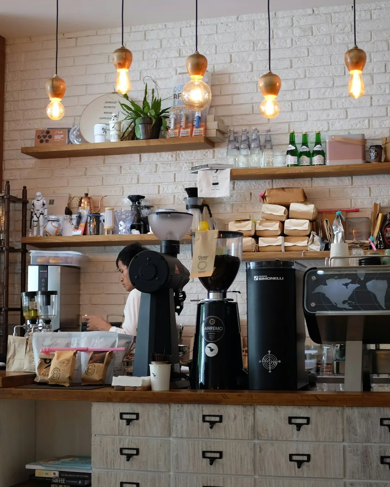
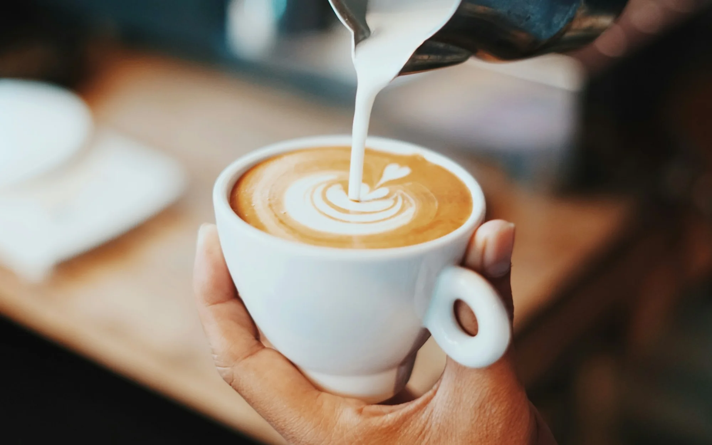
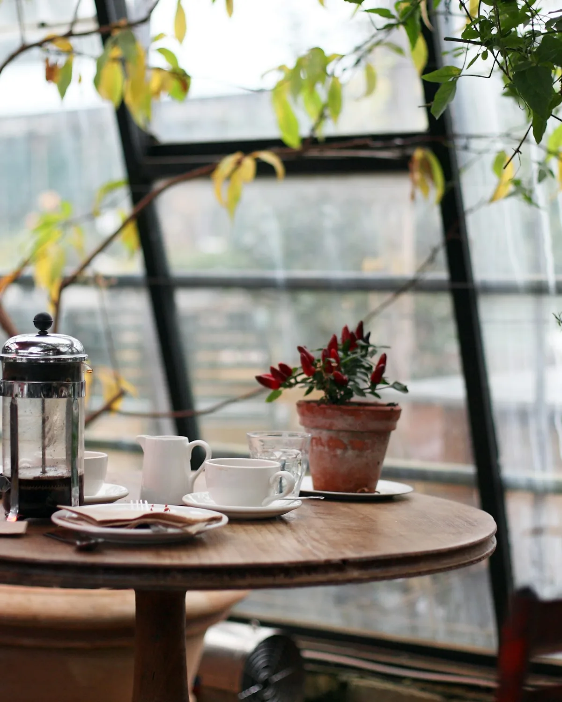
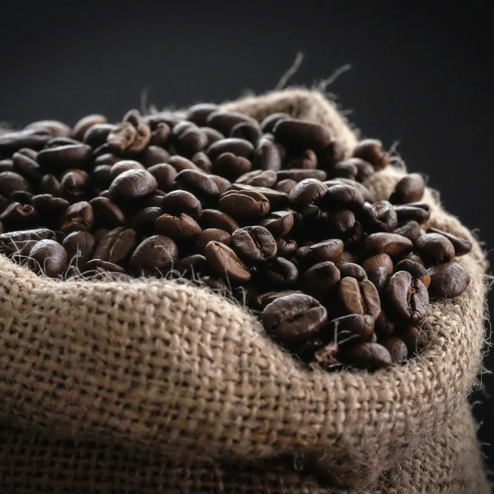
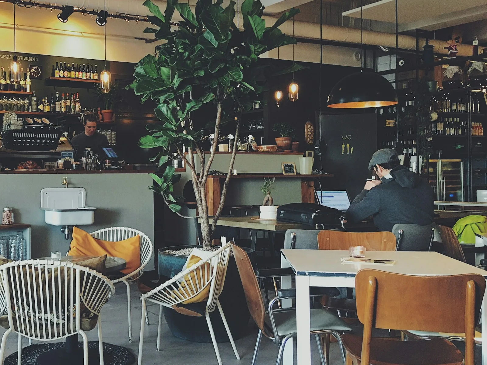

The first grind
The lights come on, the grinder wakes up, and the first espresso goes across the bar.
Open daily from 6:30
Find the café
Morning edition · Vol. 01 · Portland, OR
House oat latte · 08:12
Coffee for the slow hours
Small-batch coffee, warm pastries, and a seat by the window. We open at first light on Alder Street.
01 Our story
Morrow began with a second-hand roaster and a simple idea: the best part of the day shouldn't be rushed.
We roast in small batches in the back, bake before sunrise, and keep the window seats open for whoever needs them.
— Mira & Jonah, founders

03 A day at Morrow
From the first grind to the last rinse — a few hours in the life of the room.
First grind to last pour — four moments.
01 / 04
04 The roast
A washed Colombia from the hills above Pitalito — cocoa nib, red apple, and a long, clean finish. Roasted every Tuesday in the back room.

Morrow House · Lot 001 · 250 g
Profile Roast curve
Charge 198°C · First crack 9:12 · Drop 11:40
05 Come by
We're on Alder Street, a block from the river. Come for the coffee; stay for the light.
Next cupping · Sat 14 Nov · 10:00
Four coffees, one table, no experience necessary. Free, but seats are limited.
